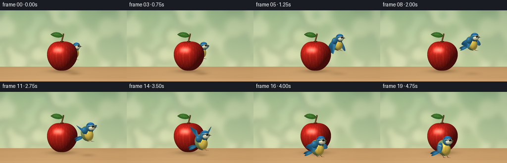
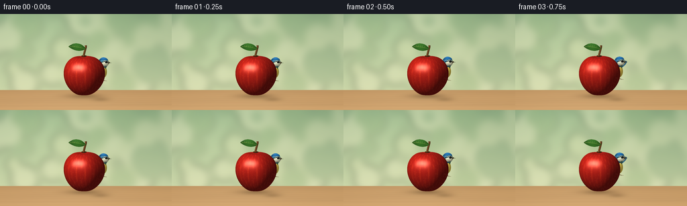

CODING AGENTS AS PIXEL WORLD MODELS
traex/GPT-6.1-Sol · dynamic_spatial_relationship_0038
点击播放 · 原生 RGB 像素
逐轮保存的候选
回放视频、检查图与代码变化。
每份候选均可单独播放。实际图片检查记录在下方工具轨迹中。
候选 01播放与检查图
点击播放 · 原生 RGB 像素


展开代码变化
--- 上一保存版本
+++ 本次保存版本
@@ -0,0 +1,252 @@
+from pathlib import Path
+import json, math
+import numpy as np
+from PIL import Image, ImageDraw, ImageFilter
+import artifact_io
+
+ROOT=Path(__file__).resolve().parent
+SPEC=json.loads((ROOT/'task_spec.json').read_text())
+W,H=SPEC['width'],SPEC['height']
+S=4
+WW,HH=W*S,H*S
+rng=np.random.default_rng(1038)
+
+def xy(points): return [(int(x*S),int(y*S)) for x,y in points]
+def bezier(points, n=18):
+ out=[points[0]]
+ for k in range(1,len(points),3):
+ a=np.array(out[-1]); b,c,d=map(np.array,points[k:k+3])
+ for t in np.linspace(0,1,n)[1:]: out.append(tuple((1-t)**3*a+3*(1-t)**2*t*b+3*(1-t)*t*t*c+t**3*d))
+ return out
+
+def path_mask(points):
+ m=Image.new('L',(WW,HH));ImageDraw.Draw(m).polygon(xy(bezier(points)),fill=255);return m
+
+def ellipse_shade(im,cx,cy,rx,ry,base,angle=0,alpha=255,shine=.15):
+ # Orthographic, analytically shaded rounded form.
+ r=max(rx,ry)+2
+ x0=max(0,int((cx-r)*S));x1=min(WW,int((cx+r)*S)+1)
+ y0=max(0,int((cy-r)*S));y1=min(HH,int((cy+r)*S)+1)
+ if x0>=x1 or y0>=y1:return
+ yy,xx=np.mgrid[y0:y1,x0:x1].astype(float)/S
+ ca,sa=math.cos(angle),math.sin(angle)
+ u=((xx-cx)*ca+(yy-cy)*sa)/rx
+ v=(-(xx-cx)*sa+(yy-cy)*ca)/ry
+ q=u*u+v*v; z=np.sqrt(np.maximum(0,1-q))
+ nx=u*ca-v*sa; ny=u*sa+v*ca
+ light=np.maximum(0,-.42*nx-.60*ny+.68*z)
+ spec=np.exp(-((nx+.31)**2+(ny+.43)**2+(z-.84)**2)/.035)*shine
+ color=np.array(base)[None,None,:]*(.55+.52*light[:,:,None])+255*spec[:,:,None]
+ color+=np.maximum(0,nx)[:,:,None]*np.array([9,10,5])
+ a=(np.clip((1-q)*S*min(rx,ry)/1.4,0,1)*alpha).astype(np.uint8)
+ patch=Image.fromarray(np.dstack((np.clip(color,0,255).astype(np.uint8),a)),mode='RGBA')
+ im.alpha_composite(patch,(x0,y0))
+
+def shaded_path(im,pts,color,shine=.18):
+ m=path_mask(pts);a=np.asarray(m)
+ ys,xs=np.nonzero(a)
+ if not len(xs):return
+ x0,x1=xs.min(),xs.max()+1;y0,y1=ys.min(),ys.max()+1
+ yy,xx=np.mgrid[y0:y1,x0:x1]
+ u=(xx-x0)/max(1,x1-x0);v=(yy-y0)/max(1,y1-y0)
+ light=.65+.35*np.sin(np.pi*u)+.12*(1-v)
+ c=np.array(color)[None,None,:]*light[:,:,None]
+ c+=shine*70*np.exp(-((u-.32)**2+(v-.27)**2)/.08)[:,:,None]
+ p=np.dstack([np.clip(c,0,255).astype('uint8'),a[y0:y1,x0:x1]])
+ im.alpha_composite(Image.fromarray(p,'RGBA'),(x0,y0))
+
+# A softly defocused outdoor setting; a warm, restrained tabletop.
+y,x=np.mgrid[:HH,:WW].astype(float)/S
+bg=np.empty((HH,WW,3),float)
+f=np.clip(y/118,0,1)
+bg[:]=np.array([137,166,130])[None,None,:]*(1-f[:,:,None])+np.array([200,211,166])[None,None,:]*f[:,:,None]
+illum=25*np.exp(-((x-83)/125)**2-((y-23)/84)**2)
+bg+=illum[:,:,None]*np.array([1.0,.93,.65])
+bgim=Image.fromarray(np.clip(bg,0,255).astype(np.uint8),'RGB').convert('RGBA')
+bokeh=Image.new('RGBA',(WW,HH));d=ImageDraw.Draw(bokeh)
+for i in range(60):
+ cx=rng.uniform(-20,280);cy=rng.uniform(-20,110);r=rng.uniform(4,28)
+ col=[(76,112,74,28),(238,234,187,65),(247,240,202,75),(118,150,91,40)][i%4]
+ d.ellipse((int((cx-r)*S),int((cy-r)*S),int((cx+r)*S),int((cy+r)*S)),fill=col)
+bokeh=bokeh.filter(ImageFilter.GaussianBlur(6*S));bgim=Image.alpha_composite(bgim,bokeh)
+# Smooth wooden surface, lightly visible grain with depth-of-field falloff.
+table_y=114.0
+mask=(y>=table_y)
+wood=np.empty_like(bg)
+wood[:]=[191,149,99]
+wood+=((y-table_y)*.45)[:,:,None]*np.array([1,.85,.65])
+grain=np.sin(y*2.1+.018*x+1.0*np.sin(x*.025))*.75+np.sin(y*.37+.7*np.sin(x*.019))*1.65
+wood+=grain[:,:,None]*np.array([1,.78,.46])
+wood+=6*np.exp(-((x-100)/95)**2)[:,:,None]
+bgar=np.asarray(bgim).copy();bgar[mask,:3]=np.clip(wood[mask],0,255).astype(np.uint8)
+background=Image.fromarray(bgar,'RGBA')
+# Small, extremely soft board seam.
+seam=Image.new('RGBA',(WW,HH));sd=ImageDraw.Draw(seam)
+sd.line(xy([(0,138),(256,136)]),fill=(106,74,45,42),width=2)
+background=Image.alpha_composite(background,seam.filter(ImageFilter.GaussianBlur(.7*S)))
+
+def shadow(im,cx,cy,rx,ry,strength):
+ yy,xx=np.mgrid[:HH,:WW].astype(float)/S
+ a=np.exp(-2*((xx-cx)/rx)**2-2*((yy-cy)/ry)**2)*strength
+ arr=np.empty((HH,WW,4),np.uint8);arr[:,:,:3]=[67,47,24];arr[:,:,3]=a.astype(np.uint8)
+ im.alpha_composite(Image.fromarray(arr,'RGBA'))
+
+# The apple is a hand-built lobed surface mesh, rendered once in software.
+def make_apple():
+ im=Image.new('RGBA',(WW,HH))
+ # Exact mesh lighting and depth, using only mathematical triangles.
+ nt,np_=60,100
+ theta=np.linspace(0,math.pi,nt+1)
+ phi=np.linspace(0,2*math.pi,np_+1)
+ tt,pp=np.meshgrid(theta,phi,indexing='ij')
+ rad=np.sin(tt)*(1+.10*np.cos(tt))*(1+.025*np.cos(5*pp)*np.sin(tt)**.4)
+ X=30.7*rad*np.cos(pp)
+ Z=28*rad*np.sin(pp)
+ Y=31.0*np.cos(tt)-5.0*np.exp(-(np.sin(tt)/.29)**2)*(np.cos(tt)>0)+2.0*np.exp(-(np.sin(tt)/.23)**2)*(np.cos(tt)<0)
+ elev=.16
+ sy=92-Y*math.cos(elev)+Z*math.sin(elev)
+ dep=Y*math.sin(elev)+Z*math.cos(elev)
+ sx=125+X
+ P=np.stack([X,Y,Z],axis=-1)
+ dp=np.gradient(P,axis=1);dt=np.gradient(P,axis=0)
+ N=np.cross(dt,dp);N/=np.maximum(np.linalg.norm(N,axis=-1,keepdims=True),1e-9)
+ # Ensure outward normals.
+ if np.mean(np.sum(N*P,axis=-1))<0:N=-N
+ light=np.maximum(0,np.sum(N*np.array([-.43,.64,.63]),axis=-1))
+ half=np.array([-.24,.43,.87]);half/=np.linalg.norm(half)
+ spec=np.maximum(0,np.sum(N*half,axis=-1))**45
+ broad=np.maximum(0,np.sum(N*half,axis=-1))**8
+ # Warm streaks and tiny skin lenticels are fixed in object coordinates.
+ stripe=(.5+.5*np.sin(pp*28+3*np.cos(tt*2)))**12
+ base=np.zeros(P.shape)+np.array([177,30,23])
+ base+=stripe[:,:,None]*np.array([26,13,4])
+ base+=np.maximum(0,np.cos(pp+2.5))[:,:,None]*np.array([11,5,0])
+ colors=base*(.36+.74*light[:,:,None])+spec[:,:,None]*np.array([125,112,97])+broad[:,:,None]*np.array([21,9,6])
+ depth=np.full((HH,WW),-1e10,dtype=float)
+ rgba=np.zeros((HH,WW,4),np.uint8)
+ verts=np.stack([sx*S,sy*S,dep],axis=-1)
+ def triangle(ids):
+ vv=np.array([verts[i,j] for i,j in ids]); cc=np.array([colors[i,j] for i,j in ids])
+ xa=max(0,int(np.floor(vv[:,0].min())));xb=min(WW,int(np.ceil(vv[:,0].max()))+1)
+ ya=max(0,int(np.floor(vv[:,1].min())));yb=min(HH,int(np.ceil(vv[:,1].max()))+1)
+ if xa>=xb or ya>=yb:return
+ ax,ay=vv[0,:2];bx,by=vv[1,:2];cx,cy=vv[2,:2]
+ den=(by-cy)*(ax-cx)+(cx-bx)*(ay-cy)
+ if abs(den)<1e-8:return
+ yy,xx=np.mgrid[ya:yb,xa:xb];xx=xx+.5;yy=yy+.5
+ aa=((by-cy)*(xx-cx)+(cx-bx)*(yy-cy))/den
+ bb=((cy-ay)*(xx-cx)+(ax-cx)*(yy-cy))/den;dd=1-aa-bb
+ zz=aa*vv[0,2]+bb*vv[1,2]+dd*vv[2,2]
+ hit=(aa>=-1e-5)&(bb>=-1e-5)&(dd>=-1e-5)&(zz>depth[ya:yb,xa:xb])
+ depth[ya:yb,xa:xb][hit]=zz[hit]
+ rgb=aa[:,:,None]*cc[0]+bb[:,:,None]*cc[1]+dd[:,:,None]*cc[2]
+ rgba[ya:yb,xa:xb,:3][hit]=np.clip(rgb[hit],0,255).astype(np.uint8)
+ rgba[ya:yb,xa:xb,3][hit]=255
+ for i in range(nt):
+ for j in range(np_):
+ triangle([(i,j),(i+1,j),(i,j+1)])
+ triangle([(i+1,j),(i+1,j+1),(i,j+1)])
+ # Add very small, low-contrast pores only within the surface.
+ for _ in range(480):
+ px=int(rng.uniform(96,155)*S);py=int(rng.uniform(62,123)*S)
+ if rgba[py,px,3] and depth[py,px]>6:
+ rr=rng.choice([1,1,2]);rgb=rgba[py,px,:3].astype(int)+np.array([23,19,11])
+ ImageDraw.Draw(im).ellipse((px-rr,py-rr,px+rr,py+rr),fill=tuple(np.clip(rgb,0,255))+(95,))
+ baseim=Image.fromarray(rgba,'RGBA');baseim.alpha_composite(im)
+ # Top dimple, curved woody stem, and a green leaf with a midrib.
+ ellipse_shade(baseim,125,63,4.3,1.5,(83,41,18),shine=.0)
+ dr=ImageDraw.Draw(baseim)
+ stem=bezier([(125,63),(125.4,58),(128.4,52),(128.2,47)])
+ dr.line(xy(stem),fill=(78,47,24,255),width=3*S)
+ dr.line(xy([(p[0]-.6,p[1]) for p in stem]),fill=(133,91,44,255),width=S)
+ shaded_path(baseim,[(128,52),(119,40),(107,44),(102,49),(111,56),(121,57),(128,52)],(51,104,35),.12)
+ dr=ImageDraw.Draw(baseim)
+ dr.line(xy(bezier([(103,49),(112,48),(119,50),(127,52)])),fill=(136,165,68,255),width=max(1,S//2))
+ for k in range(5):
+ ax=108+k*3
+ dr.line(xy([(ax,49+(ax-108)*.13),(ax+1,46+(ax-108)*.15)]),fill=(104,143,52,180),width=1)
+ return baseim
+apple=make_apple()
+
+def bird(cx,cy,scale,flap,flight):
+ im=Image.new('RGBA',(WW,HH))
+ def p(x,y):return (cx+x*scale,cy+y*scale)
+ def el(x,y,rx,ry,c,ang=0,sh=.10):ellipse_shade(im,*p(x,y),rx*scale,ry*scale,c,ang,shine=sh)
+ def shape(pts,c,sh=.12):shaded_path(im,[p(*q) for q in pts],c,sh)
+ def line(pts,c,w):ImageDraw.Draw(im).line(xy([p(*q) for q in pts]),fill=c,width=max(1,int(w*S*scale)),joint='curve')
+ # Tail: distinct, slim overlapping flight feathers.
+ shape([(-6,7),(-11,12),(-23,13),(-25,11),(-22,7),(-14,3),(-6,7)],(28,78,111))
+ shape([(-7,8),(-10,12),(-22,17),(-23,15),(-20,9),(-13,6),(-7,8)],(36,103,139))
+ line([(-21,13),(-11,8)],(104,164,179,200),.45)
+ # The far wing is visible while flying and is positioned behind the torso.
+ amp=.2+.8*flight
+ tipy=-7-24*flap*amp
+ if flight>.05:
+ shape([(1,-9),(12,-15),(20,tipy-4),(20,tipy),(17,tipy+7),(10,-1),(1,0),(0,-3),(0,-7),(1,-9)],(49,103,135))
+ # Tucked or landing legs, with three thin toes.
+ legstretch=1-flight*.6
+ for lx in [-2,6]:
+ endx=lx+2+flight*2
+ line([(lx,10),(lx-1,13),(endx,13+5*legstretch)],(91,65,39,255),.8)
+ for tx in [-3,0,3]:line([(endx,13+5*legstretch),(endx+tx+2,14+5*legstretch)],(86,61,36,255),.65)
+ el(0,0,11.8,15.2,(129,149,89),-.24,.1)
+ el(4.2,2,8.9,12.4,(229,197,78),-.16,.18)
+ # Fine, small breast feather curves.
+ for k in range(7):
+ yy=-2+k*2
+ line([(2,yy),(3.5,yy+.7),(5,yy+.25)],(183,162,69,80),.3)
+ # Near wing: a fan of individually contoured feathers, not a rigid paddle.
+ if flight>.03:
+ root=(-4,-8)
+ # Negative tip displacement is the upstroke; positive is downstroke.
+ tip=(-20,-7-25*flap*amp)
+ for k in range(7):
+ frac=k/6
+ tx=tip[0]+frac*12;ty=tip[1]+frac*7
+ pts=[root,(-12,-10),(tx-3,ty-3),(tx,ty),(tx+2,ty+3),(-3,4),(0,1),(-1,-3),(-2,-7),root]
+ shape(pts,(28+int(frac*10),91+int(frac*19),135+int(frac*16)),.13)
+ line([(-3,-5),(tx,ty)],(99,158,181,160),.36)
+ el(-4,-6,6.4,7,(45,114,153),-.2,.16)
+ else:
+ shape([(-5,-10),(-17,-7),(-13,8),(-8,11),(-2,7),(1,-5),(-5,-10)],(42,105,142),.16)
+ for k in range(4):line([(-10+k*1.7,-3),(-11+k*1.5,7-k*.5)],(115,167,176,230),.5)
+ line([(-10,-5),(-4,-3)],(195,207,191,255),1.2)
+ # Round head, white cheek, cobalt cap, black eye-line, pointed beak.
+ el(7.1,-13,9,9.1,(56,117,147),-.10,.18)
+ el(10.1,-11.5,6.7,5.3,(227,225,191),-.2,.12)
+ shape([(0,-16),(1,-23),(11,-24),(15,-18),(12,-17),(5,-18),(0,-16)],(35,106,162),.20)
+ line([(3,-13.1),(10,-15),(16,-13.8)],(24,55,64,255),1.5)
+ shape([(14,-14),(17,-15),(22,-12.4),(15,-10.9),(15,-11.6),(14,-12.8),(14,-14)],(75,70,48),.10)
+ line([(16,-12.4),(21,-12.4)],(38,39,30,255),.40)
+ el(11.9,-14.1,2.15,2.3,(8,17,19),sh=.20)
+ el(11.25,-14.85,.67,.67,(250,252,242),sh=0)
+ el(12.55,-13.3,.22,.22,(128,180,184),sh=0)
+ # A small dark bib at the throat.
+ shape([(9,-6),(12,-8),(14,-7),(11,-2),(10,-3),(10,-5),(9,-6)],(40,67,57),.04)
+ return im
+
+def smooth(t): return t*t*(3-2*t)
+# Key positions trace an unambiguous half-orbit from far side to near side.
+keys=[(0,148,84,.86),(3,149,83,.87),(6,174,62,.91),(9,187,68,.97),(12,171,90,1.04),(16,128,113,1.08),(19,128,113,1.08)]
+frames=[]
+for i in range(SPEC['frames']):
+ for a,b in zip(keys,keys[1:]):
+ if a[0]<=i<=b[0]:
+ t=smooth((i-a[0])/(b[0]-a[0]));cx=a[1]+t*(b[1]-a[1]);cy=a[2]+t*(b[2]-a[2]);sc=a[3]+t*(b[3]-a[3]);break
+ flight=0 if i<3 or i>=17 else min(1,(i-2)/2,(17-i)/2)
+ flap=math.sin((i-3)*2.35+.4)
+ if i<3:cy+=.3*math.sin(i*1.8)
+ if i>=17:cy+=.16*math.sin(i*1.8)
+ im=background.copy()
+ shadow(im,126,123,36,5.6,91)
+ shadow(im,cx+2,128,13+(113-cy)*.16,2.7+(113-cy)*.055,54 if i<4 else 61-min(40,max(0,113-cy)*.65))
+ bimg=bird(cx,cy,sc,flap,flight)
+ if i<9:
+ im.alpha_composite(bimg);im.alpha_composite(apple)
+ else:
+ im.alpha_composite(apple);im.alpha_composite(bimg)
+ # Fine antialiasing gives the tiny eye, wing edges, and leaf a clean finish.
+ rgb=im.convert('RGB').resize((W,H),Image.Resampling.LANCZOS)
+ frames.append(np.asarray(rgb,dtype=np.uint8))
+artifact_io.save(np.stack(frames),ROOT)
+print('Saved',len(frames),'RGB frames:',W,'x',H)
可观测工具轨迹
实际执行的命令与返回图片。
命令 1exit 0
/bin/bash -lc 'ls -la && cat prompt.txt && cat GENERATION_RULES.md && cat task_spec.json'
命令 2exit 0
/bin/bash -lc 'cat artifact_io.py'
命令 3exit 0
/bin/bash -lc "cat > generate.py <<'PY'
from pathlib import Path
import json, math
import numpy as np
from PIL import Image, ImageDraw, ImageFilter
import artifact_io
ROOT=Path(__file__).resolve().parent
SPEC=json.loads((ROOT/'task_spec.json').read_text())
W,H=SPEC['width'],SPEC['height']
S=4
WW,HH=W*S,H*S
rng=np.random.default_rng(1038)
def xy(points): return [(int(x*S),int(y*S)) for x,y in points]
def bezier(points, n=18):
out=[points[0]]
for k in range(1,len(points),3):
a=np.array(out[-1]); b,c,d=map(np.array,points[k:k+3])
for t in np.linspace(0,1,n)[1:]: out.append(tuple((1-t)**3*a+3*(1-t)**2*t*b+3*(1-t)*t*t*c+t**3*d))
return out
def path_mask(points):
m=Image.new('L',(WW,HH));ImageDraw.Draw(m).polygon(xy(bezier(points)),fill=255);return m
def ellipse_shade(im,cx,cy,rx,ry,base,angle=0,alpha=255,shine=.15):
# Orthographic, analytically shaded rounded form.
r=max(rx,ry)+2
x0=max(0,int((cx-r)*S));x1=min(WW,int((cx+r)*S)+1)
y0=max(0,int((cy-r)*S));y1=min(HH,int((cy+r)*S)+1)
if x0>=x1 or y0>=y1:return
yy,xx=np.mgrid[y0:y1,x0:x1].astype(float)/S
ca,sa=math.cos(angle),math.sin(angle)
u=((xx-cx)*ca+(yy-cy)*sa)/rx
v=(-(xx-cx)*sa+(yy-cy)*ca)/ry
q=u*u+v*v; z=np.sqrt(np.maximum(0,1-q))
nx=u*ca-v*sa; ny=u*sa+v*ca
light=np.maximum(0,-.42*nx-.60*ny+.68*z)
spec=np.exp(-((nx+.31)**2+(ny+.43)**2+(z-.84)**2)/.035)*shine
color=np.array(base)[None,None,:]*(.55+.52*light[:,:,None])+255*spec[:,:,None]
color+=np.maximum(0,nx)[:,:,None]*np.array([9,10,5])
a=(np.clip((1-q)*S*min(rx,ry)/1.4,0,1)*alpha).astype(np.uint8)
patch=Image.fromarray(np.dstack((np.clip(color,0,255).astype(np.uint8),a)),mode='RGBA')
im.alpha_composite(patch,(x0,y0))
def shaded_path(im,pts,color,shine=.18):
m=path_mask(pts);a=np.asarray(m)
ys,xs=np.nonzero(a)
if not len(xs):return
x0,x1=xs.min(),xs.max()+1;y0,y1=ys.min(),ys.max()+1
yy,xx=np.mgrid[y0:y1,x0:x1]
u=(xx-x0)/max(1,x1-x0);v=(yy-y0)/max(1,y1-y0)
light=.65+.35*np.sin(np.pi*u)+.12*(1-v)
c=np.array(color)[None,None,:]*light[:,:,None]
c+=shine*70*np.exp(-((u-.32)**2+(v-.27)**2)/.08)[:,:,None]
p=np.dstack([np.clip(c,0,255).astype('uint8'),a[y0:y1,x0:x1]])
im.alpha_composite(Image.fromarray(p,'RGBA'),(x0,y0))
# A softly defocused outdoor setting; a warm, restrained tabletop.
y,x=np.mgrid[:HH,:WW].astype(float)/S
bg=np.empty((HH,WW,3),float)
f=np.clip(y/118,0,1)
bg[:]=np.array([137,166,130])[None,None,:]*(1-f[:,:,None])+np.array([200,211,166])[None,None,:]*f[:,:,None]
illum=25*np.exp(-((x-83)/125)**2-((y-23)/84)**2)
bg+=illum[:,:,None]*np.array([1.0,.93,.65])
bgim=Image.fromarray(np.clip(bg,0,255).astype(np.uint8),'RGB').convert('RGBA')
bokeh=Image.new('RGBA',(WW,HH));d=ImageDraw.Draw(bokeh)
for i in range(60):
cx=rng.uniform(-20,280);cy=rng.uniform(-20,110);r=rng.uniform(4,28)
col=[(76,112,74,28),(238,234,187,65),(247,240,202,75),(118,150,91,40)][i%4]
d.ellipse((int((cx-r)*S),int((cy-r)*S),int((cx+r)*S),int((cy+r)*S)),fill=col)
bokeh=bokeh.filter(ImageFilter.GaussianBlur(6*S));bgim=Image.alpha_composite(bgim,bokeh)
# Smooth wooden surface, lightly visible grain with depth-of-field falloff.
table_y=114.0
mask=(y>=table_y)
wood=np.empty_like(bg)
wood[:]=[191,149,99]
wood+=((y-table_y)*.45)[:,:,None]*np.array([1,.85,.65])
grain=np.sin(y*2.1+.018*x+1.0*np.sin(x*.025))*.75+np.sin(y*.37+.7*np.sin(x*.019))*1.65
wood+=grain[:,:,None]*np.array([1,.78,.46])
wood+=6*np.exp(-((x-100)/95)**2)[:,:,None]
bgar=np.asarray(bgim).copy();bgar[mask,:3]=np.clip(wood[mask],0,255).astype(np.uint8)
background=Image.fromarray(bgar,'RGBA')
# Small, extremely soft board seam.
seam=Image.new('RGBA',(WW,HH));sd=ImageDraw.Draw(seam)
sd.line(xy([(0,138),(256,136)]),fill=(106,74,45,42),width=2)
background=Image.alpha_composite(background,seam.filter(ImageFilter.GaussianBlur(.7*S)))
def shadow(im,cx,cy,rx,ry,strength):
yy,xx=np.mgrid[:HH,:WW].astype(float)/S
a=np.exp(-2*((xx-cx)/rx)**2-2*((yy-cy)/ry)**2)*strength
arr=np.empty((HH,WW,4),np.uint8);arr[:,:,:3]=[67,47,24];arr[:,:,3]=a.astype(np.uint8)
im.alpha_composite(Image.fromarray(arr,'RGBA'))
# The apple is a hand-built lobed surface mesh, rendered once in software.
def make_apple():
im=Image.new('RGBA',(WW,HH))
# Exact mesh lighting and depth, using only mathematical triangles.
nt,np_=60,100
theta=np.linspace(0,math.pi,nt+1)
phi=np.linspace(0,2*math.pi,np_+1)
tt,pp=np.meshgrid(theta,phi,indexing='ij')
rad=np.sin(tt)*(1+.10*np.cos(tt))*(1+.025*np.cos(5*pp)*np.sin(tt)**.4)
X=30.7*rad*np.cos(pp)
Z=28*rad*np.sin(pp)
Y=31.0*np.cos(tt)-5.0*np.exp(-(np.sin(tt)/.29)**2)*(np.cos(tt)>0)+2.0*np.exp(-(np.sin(tt)/.23)**2)*(np.cos(tt)<0)
elev=.16
sy=92-Y*math.cos(elev)+Z*math.sin(elev)
dep=Y*math.sin(elev)+Z*math.cos(elev)
sx=125+X
P=np.stack([X,Y,Z],axis=-1)
dp=np.gradient(P,axis=1);dt=np.gradient(P,axis=0)
N=np.cross(dt,dp);N/=np.maximum(np.linalg.norm(N,axis=-1,keepdims=True),1e-9)
# Ensure outward normals.
if np.mean(np.sum(N*P,axis=-1))<0:N=-N
light=np.maximum(0,np.sum(N*np.array([-.43,.64,.63]),axis=-1))
half=np.array([-.24,.43,.87]);half/=np.linalg.norm(half)
spec=np.maximum(0,np.sum(N*half,axis=-1))**45
broad=np.maximum(0,np.sum(N*half,axis=-1))**8
# Warm streaks and tiny skin lenticels are fixed in object coordinates.
stripe=(.5+.5*np.sin(pp*28+3*np.cos(tt*2)))**12
base=np.zeros(P.shape)+np.array([177,30,23])
base+=stripe[:,:,None]*np.array([26,13,4])
base+=np.maximum(0,np.cos(pp+2.5))[:,:,None]*np.array([11,5,0])
colors=base*(.36+.74*light[:,:,None])+spec[:,:,None]*np.array([125,112,97])+broad[:,:,None]*np.array([21,9,6])
depth=np.full((HH,WW),-1e10,dtype=float)
rgba=np.zeros((HH,WW,4),np.uint8)
verts=np.stack([sx*S,sy*S,dep],axis=-1)
def triangle(ids):
vv=np.array([verts[i,j] for i,j in ids]); cc=np.array([colors[i,j] for i,j in ids])
xa=max(0,int(np.floor(vv[:,0].min())));xb=min(WW,int(np.ceil(vv[:,0].max()))+1)
ya=max(0,int(np.floor(vv[:,1].min())));yb=min(HH,int(np.ceil(vv[:,1].max()))+1)
if xa>=xb or ya>=yb:return
ax,ay=vv[0,:2];bx,by=vv[1,:2];cx,cy=vv[2,:2]
den=(by-cy)*(ax-cx)+(cx-bx)*(ay-cy)
if abs(den)<1e-8:return
yy,xx=np.mgrid[ya:yb,xa:xb];xx=xx+.5;yy=yy+.5
aa=((by-cy)*(xx-cx)+(cx-bx)*(yy-cy))/den
bb=((cy-ay)*(xx-cx)+(ax-cx)*(yy-cy))/den;dd=1-aa-bb
zz=aa*vv[0,2]+bb*vv[1,2]+dd*vv[2,2]
hit=(aa>=-1e-5)&(bb>=-1e-5)&(dd>=-1e-5)&(zz>depth[ya:yb,xa:xb])
depth[ya:yb,xa:xb][hit]=zz[hit]
rgb=aa[:,:,None]*cc[0]+bb[:,:,None]*cc[1]+dd[:,:,None]*cc[2]
rgba[ya:yb,xa:xb,:3][hit]=np.clip(rgb[hit],0,255).astype(np.uint8)
rgba[ya:yb,xa:xb,3][hit]=255
for i in range(nt):
for j in range(np_):
triangle([(i,j),(i+1,j),(i,j+1)])
triangle([(i+1,j),(i+1,j+1),(i,j+1)])
# Add very small, low-contrast pores only within the surface.
for _ in range(480):
px=int(rng.uniform(96,155)*S);py=int(rng.uniform(62,123)*S)
if rgba[py,px,3] and depth[py,px]>6:
rr=rng.choice([1,1,2]);rgb=rgba[py,px,:3].astype(int)+np.array([23,19,11])
ImageDraw.Draw(im).ellipse((px-rr,py-rr,px+rr,py+rr),fill=tuple(np.clip(rgb,0,255))+(95,))
baseim=Image.fromarray(rgba,'RGBA');baseim.alpha_composite(im)
# Top dimple, curved woody stem, and a green leaf with a midrib.
ellipse_shade(baseim,125,63,4.3,1.5,(83,41,18),shine=.0)
dr=ImageDraw.Draw(baseim)
stem=bezier([(125,63),(125.4,58),(128.4,52),(128.2,47)])
dr.line(xy(stem),fill=(78,47,24,255),width=3*S)
dr.line(xy([(p[0]-.6,p[1]) for p in stem]),fill=(133,91,44,255),width=S)
shaded_path(baseim,[(128,52),(119,40),(107,44),(102,49),(111,56),(121,57),(128,52)],(51,104,35),.12)
dr=ImageDraw.Draw(baseim)
dr.line(xy(bezier([(103,49),(112,48),(119,50),(127,52)])),fill=(136,165,68,255),width=max(1,S//2))
for k in range(5):
ax=108+k*3
dr.line(xy([(ax,49+(ax-108)*.13),(ax+1,46+(ax-108)*.15)]),fill=(104,143,52,180),width=1)
return baseim
apple=make_apple()
def bird(cx,cy,scale,flap,flight):
im=Image.new('RGBA',(WW,HH))
def p(x,y):return (cx+x*scale,cy+y*scale)
def el(x,y,rx,ry,c,ang=0,sh=.10):ellipse_shade(im,*p(x,y),rx*scale,ry*scale,c,ang,shine=sh)
def shape(pts,c,sh=.12):shaded_path(im,[p(*q) for q in pts],c,sh)
def line(pts,c,w):ImageDraw.Draw(im).line(xy([p(*q) for q in pts]),fill=c,width=max(1,int(w*S*scale)),joint='curve')
# Tail: distinct, slim overlapping flight feathers.
shape([(-6,7),(-11,12),(-23,13),(-25,11),(-22,7),(-14,3),(-6,7)],(28,78,111))
shape([(-7,8),(-10,12),(-22,17),(-23,15),(-20,9),(-13,6),(-7,8)],(36,103,139))
line([(-21,13),(-11,8)],(104,164,179,200),.45)
# The far wing is visible while flying and is positioned behind the torso.
amp=.2+.8*flight
tipy=-7-24*flap*amp
if flight>.05:
shape([(1,-9),(12,-15),(20,tipy-4),(20,tipy),(17,tipy+7),(10,-1),(1,0),(0,-3),(0,-7),(1,-9)],(49,103,135))
# Tucked or landing legs, with three thin toes.
legstretch=1-flight*.6
for lx in [-2,6]:
endx=lx+2+flight*2
line([(lx,10),(lx-1,13),(endx,13+5*legstretch)],(91,65,39,255),.8)
for tx in [-3,0,3]:line([(endx,13+5*legstretch),(endx+tx+2,14+5*legstretch)],(86,61,36,255),.65)
el(0,0,11.8,15.2,(129,149,89),-.24,.1)
el(4.2,2,8.9,12.4,(229,197,78),-.16,.18)
# Fine, small breast feather curves.
for k in range(7):
yy=-2+k*2
line([(2,yy),(3.5,yy+.7),(5,yy+.25)],(183,162,69,80),.3)
# Near wing: a fan of individually contoured feathers, not a rigid paddle.
if flight>.03:
root=(-4,-8)
# Negative tip displacement is the upstroke; positive is downstroke.
tip=(-20,-7-25*flap*amp)
for k in range(7):
frac=k/6
tx=tip[0]+frac*12;ty=tip[1]+frac*7
pts=[root,(-12,-10),(tx-3,ty-3),(tx,ty),(tx+2,ty+3),(-3,4),(0,1),(-1,-3),(-2,-7),root]
shape(pts,(28+int(frac*10),91+int(frac*19),135+int(frac*16)),.13)
line([(-3,-5),(tx,ty)],(99,158,181,160),.36)
el(-4,-6,6.4,7,(45,114,153),-.2,.16)
else:
shape([(-5,-10),(-17,-7),(-13,8),(-8,11),(-2,7),(1,-5),(-5,-10)],(42,105,142),.16)
for k in range(4):line([(-10+k*1.7,-3),(-11+k*1.5,7-k*.5)],(115,167,176,230),.5)
line([(-10,-5),(-4,-3)],(195,207,191,255),1.2)
# Round head, white cheek, cobalt cap, black eye-line, pointed beak.
el(7.1,-13,9,9.1,(56,117,147),-.10,.18)
el(10.1,-11.5,6.7,5.3,(227,225,191),-.2,.12)
shape([(0,-16),(1,-23),(11,-24),(15,-18),(12,-17),(5,-18),(0,-16)],(35,106,162),.20)
line([(3,-13.1),(10,-15),(16,-13.8)],(24,55,64,255),1.5)
shape([(14,-14),(17,-15),(22,-12.4),(15,-10.9),(15,-11.6),(14,-12.8),(14,-14)],(75,70,48),.10)
line([(16,-12.4),(21,-12.4)],(38,39,30,255),.40)
el(11.9,-14.1,2.15,2.3,(8,17,19),sh=.20)
el(11.25,-14.85,.67,.67,(250,252,242),sh=0)
el(12.55,-13.3,.22,.22,(128,180,184),sh=0)
# A small dark bib at the throat.
shape([(9,-6),(12,-8),(14,-7),(11,-2),(10,-3),(10,-5),(9,-6)],(40,67,57),.04)
return im
def smooth(t): return t*t*(3-2*t)
# Key positions trace an unambiguous half-orbit from far side to near side.
keys=[(0,148,84,.86),(3,149,83,.87),(6,174,62,.91),(9,187,68,.97),(12,171,90,1.04),(16,128,113,1.08),(19,128,113,1.08)]
frames=[]
for i in range(SPEC['frames']):
for a,b in zip(keys,keys[1:]):
if a[0]<=i<=b[0]:
t=smooth((i-a[0])/(b[0]-a[0]));cx=a[1]+t*(b[1]-a[1]);cy=a[2]+t*(b[2]-a[2]);sc=a[3]+t*(b[3]-a[3]);break
flight=0 if i<3 or i>=17 else min(1,(i-2)/2,(17-i)/2)
flap=math.sin((i-3)*2.35+.4)
if i<3:cy+=.3*math.sin(i*1.8)
if i>=17:cy+=.16*math.sin(i*1.8)
im=background.copy()
shadow(im,126,123,36,5.6,91)
shadow(im,cx+2,128,13+(113-cy)*.16,2.7+(113-cy)*.055,54 if i<4 else 61-min(40,max(0,113-cy)*.65))
bimg=bird(cx,cy,sc,flap,flight)
if i<9:
im.alpha_composite(bimg);im.alpha_composite(apple)
else:
im.alpha_composite(apple);im.alpha_composite(bimg)
# Fine antialiasing gives the tiny eye, wing edges, and leaf a clean finish.
rgb=im.convert('RGB').resize((W,H),Image.Resampling.LANCZOS)
frames.append(np.asarray(rgb,dtype=np.uint8))
artifact_io.save(np.stack(frames),ROOT)
print('Saved',len(frames),'RGB frames:',W,'x',H)
PY
python generate.py"命令 4exit 1
/bin/bash -lc "python - <<'PY'
import numpy as np
from pathlib import Path
from PIL import Image
p=Path('.')
a=np.load('pixels.npz')['pixels']
assert a.shape==(144,256,20)
assert len(list((p/'frames').glob('*.png')))==20
assert all(Image.open(p/'frames'/f'{i:02d}.png').mode=='RGB' for i in range(20))
print('Verified pixels.npz, 20 RGB PNG frames, and index.html:',(p/'index.html').exists())
PY
command -v ffmpeg"保存候选 1 份；完成命令 4 次；可验证图片返回 0 张。原始 API 响应与完整日志保留在本地。